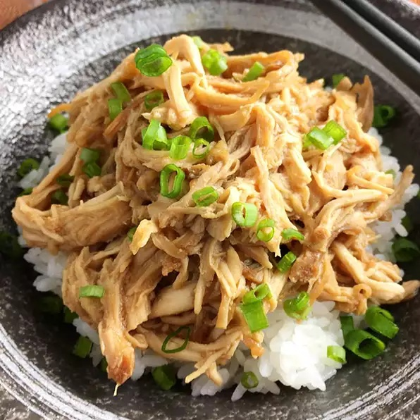

Slow Cooker Teriyaki Pulled Chicken

Description
Tender pulled teriyaki chicken, simple to make and perfect with rice and vegetables or in a crusty bun.
Ingredients:
- 4 medium skinless, boneless chicken breasts
- 2 medium skinless, boneless chicken thighs
- 1/4 cup reduced-sodium tamari or low-sodium soy sauce
- 1/4 cup honey
- 2 cloves garlic, minced
- 2 tablespoons minced fresh ginger root
- 1 tablespoon rice vinegar
- 2 tablespoons tapioca flour (starch)
- 2 tablespoons water
Directions:
- Combine chicken pieces, soy sauce, honey, garlic, ginger, and rice vinegar in a slow cooker.
- Cook until chicken is no longer pink in the centers, on Low, 6 to 8 hours, or High for 4 to 6 hours. Remove chicken to a cutting board and shred using 2 forks.
- Pour liquid from the slow cooker into a small saucepan and heat over low heat. Mix tapioca flour and water in a small bowl to create a slurry and add to the liquid. Simmer until sauce has thickened to desired consistency, 3 to 5 minutes.
- Pour sauce over pulled chicken and mix well.
Nutrition Facts:
Per Serving: 98 calories; protein 32g; carbohydrates 11.4g; fat 13.2g; cholesterol 103.3mg; sodium 591.7mg.
Disclaimer:
Recipe page constructed as final assignment to HTML-introductory coursework on The Odin Project.
All credits to this recipe belong to A Day In the Kitchen